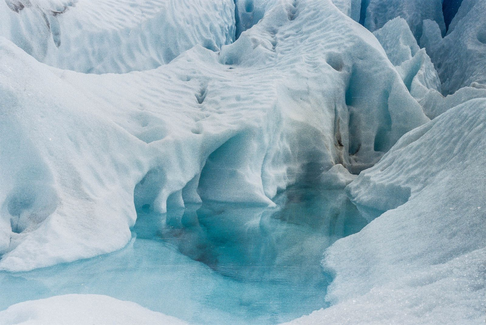

White ice reflects. Dark ponds absorb. The fraction is the story.
I am Dr Sanna Lehtonen, a sea-ice physicist in Tromsø. Research programmes and polar operators hire my two-person team to walk survey transects across melting sea ice, measure how much sunlight each surface sends back to the sky, and deliver the number — albedo, a fraction between 0 and 1 — with its uncertainty stated as carefully as its value.
Reference photograph — melting floes in open water, by Valeria Drozdova via Pexels. Not the practice's own fieldwork; campaign photography is delivered to clients, not used as decoration.
Base
Tromsø, Norway
Field seasons
2019–2026 · May–Aug
Transects walked
214 km, own log
Booking
Jun–Jul 2027 open
01
The Albedo Explorer
Table 1 is the instrument; the sliders are the ice
Albedo is a fraction: of the sunlight arriving at a surface, the share reflected back. It has no units and no opinion — but it is not one number per surface. It shifts with sun angle, cloud, wetness and age, so honest work quotes ranges. Table 1 prints the ranges this practice works to, and the midpoint the Explorer calculates with. Build a surface mix and watch the effective albedo — and the absorbed share, which is where melt comes from — move.
Table 1 — Surface classes and their broadband albedo, melt season
Surface class
Typical range
Midpoint used
What moves it
Snow-covered ice
0.75 – 0.85
0.80
Fresh falls raise it; wet, ageing snow lowers it day by day.
Bare melting ice
0.40 – 0.60
0.50
Drainage and surface roughness; blue ice sits low, white ice high.
Melt pond
0.15 – 0.35
0.25
Pond depth and the ice beneath it — shallow over bright ice reflects more.
Open water
0.06 – 0.10
0.08
Sun angle above all; near-grazing light reflects more than noon light.
Survey sheet — effective albedo of the entered mix
α = —
Per 100 units of sunlight in: — reflected— absorbed
Why the absorbed share is the story: reflected sunlight leaves; absorbed sunlight stays as heat. Shift the mix toward pond and water and absorption climbs — which melts more ice — which darkens the surface further. That loop is the ice–albedo feedback, stated as a mechanism. What one transect cannot do is stand in for the whole Arctic: it is a measurement of this ice, this week, under this sky, and the report says exactly that.

Reference photograph — a meltwater pool on ice, by Cecilia Ravalli via Pexels. A pond's albedo depends on its depth and the ice beneath it; that is why Table 1 prints a range, not a point.
02
What a campaign costs
Estimate, not a quote — the split is the point
A survey is priced in days, and the days are mostly not science. The estimator uses the practice's printed rate card — the same figures an engagement letter carries — and shows the split openly, because in polar work logistics is the budget and any quote that hides that is hiding the risk too.
Survey days on ice12
Weather days are billed at the logistics and camp rates whether or not a transect is walked — aircraft and vessels charge by the day they are held, not by the science done. It surprises every first-time client, so it is printed here, before any enquiry. A fixed-price scope is offered only after a route and season are agreed in writing.
Rate card, printed in full: science lead €1,650/day · field technician €850/day · air & ship logistics €4,800/day · camp, food & safety €620/day · instrument freight €6,400 fixed · data delivery & report €3,900 fixed. A desk radiation-budget audit of existing data is €4,800 fixed. What moves a price: season and logistics first, team size second, deliverables third.
Science lead — design, transects, analysis—
Field technician — instruments, safety, camp—
Air & ship logistics support—
Camp, food & safety cover—
Instrument freight to departure port—
Data delivery & report—
Estimate—
03
Services
Two-person team is the minimum safe unit — never solo
Albedo survey campaign
Transect-based broadband and spectral albedo measurement across a defined survey box, delivered as a gridded dataset with per-class fractions and stated uncertainty.
Client type
Research programmes
Region · season
Fram Strait / Svalbard · Jun–Jul
Basis
Day rate, rate card above
Status
Booking 2027
Melt-pond mapping
Aerial imagery classified into surface classes, ground-truthed on foot against walked transects — the step that keeps a pond fraction honest instead of merely plausible.
Client type
Modelling centres
Region · season
Fram Strait · Jul–Aug
Basis
Day rate + imagery licence
Status
Booking 2027
Instrument deployment & wintering
Autonomous radiation stations designed, deployed and serviced: power and mounting engineered for ridging and polar night, with the failure modes written into the plan before they happen.
Client type
Institutes
Region · season
Svalbard coast · Sep deployment
Basis
Deployment fee + service visits
Status
1 slot left
Radiation-budget audit
A desk audit of a programme's existing albedo data and assumptions: where the numbers came from, what they can and cannot support, and which single new measurement would most reduce the uncertainty.
Client type
Modelling groups
Region · season
Desk — your data · year-round
Basis
€4,800 fixed
Status
Open
Field-team albedo training
Two days with your own team on near-shore ice: instrument handling, calibration discipline, transect layout and the error budget — so your seasons measure the same way twice.
Client type
Expedition operators
Region · season
Tromsø / Svalbard · May
Basis
Fixed fee per cohort
Status
Waitlist
“Sanna's crew delivered the pond-fraction dataset our assimilation run had been missing for two cycles — with the uncertainty stated as carefully as the values. We rebooked before the report was a week old.”
Dr Henrik Aas — Programme Scientist, Fram Strait modelling campaign · on Fieldwork Case 01 (fictional testimonial, practice and client invented for this template)
04
Book a season
The 2027 melt season has two campaign windows left. Enquiries are answered from Tromsø within two working days out of season — and by satellite message, slowly, during one.